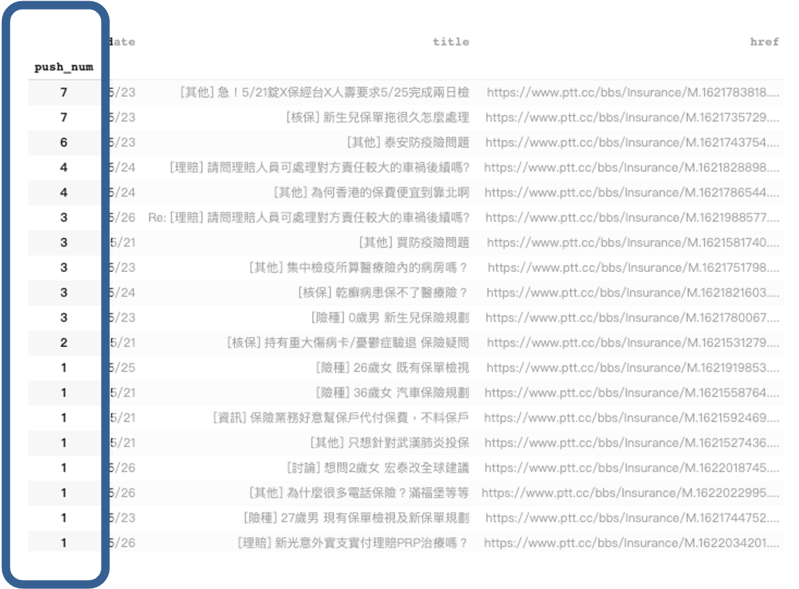
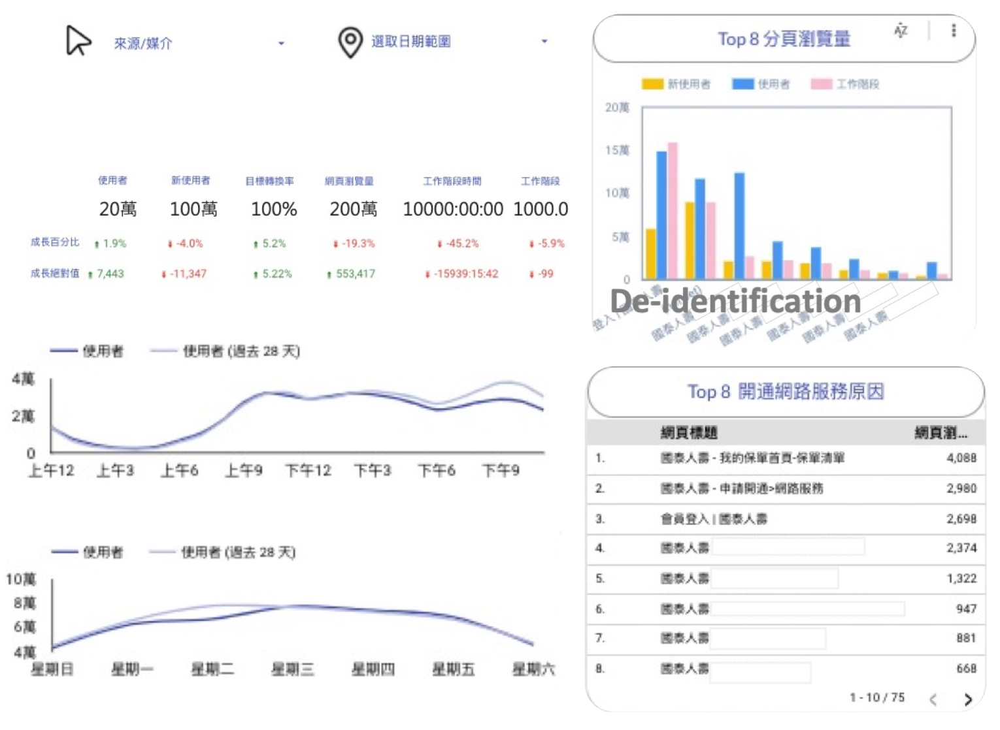

第二名
2021 CAP國泰敏捷實習專案競賽
(2nd/50+)
專案項目
RPA確保GTM作業安全性
一、情境概要
代碼管理工具 GTM 能統一管理多個 GA 追蹤的網站， 且每一次新增的追蹤碼可透過此 同步發布，以減少須特定放在第一個 head 相關的繁複動作出錯。
二、需求痛點
- 人為疏失問題
發布 GTM 追蹤碼的過程中，若有人不小 心壓到空白或刪除鍵，就會使整個網站無法正常運作。 - 人事異動相當費時費力
每個月的人事異動，有人可能新進 或離職，亦或是權限異動，使得每月需花費大量時間比對及調整。
三、工具說明
流程機器人 RPA 是一種新興的程式軟體工具，它會模擬人的動作，將這些重 複且枯燥的電腦桌面作業程序自動化。此外，以 workflow 的方式開發，較過 往傳統開發來說便利、快速很多。在此專案裡，我們所使用的場景包括以下兩點：
- 發布GA追組碼自動化
- 人事異動自動化
四、程式流程
- 發布 GA 追組碼自動化
- 人事異動自動化
五、RPA確保GTM作業安全性成果
如下以人事異動自動化影片為例，其利用 流程機器人 RPA 串接 代碼管理工具 GTM，同時比對人事資料 Excel，來進行自動化加入、刪除、異動等程序，程序自動執行下，除了大幅降低人力時間，也提升了網站的穩定度。
P.S. 資料已去識別化
六、專案貢獻
每一次 GTM 的發布或是人事異動，都大幅考驗著人員的耐心與細心度，只要出錯一點就會使網站 crush，因此透過RPA的方式來完成系統自動化，約減少人員近八成的作業時間，且開發時長只花費三天即完成兩支。
PTT 社群互動即時討論串
一、需求痛點
主要來自於資料不及時與不符合使用者需求，前者，未及時抓取社群軟體的討論串，因此往往錯失了網路用語或是產品討論的即時性；後者，則是資料整理的方式未必符合使用者需求，或是未過濾掉太常見的字眼，因此收集到太多無重點的資料。
二、開發流程
三、PTT 社群互動即時討論串成果
1. 客製化表格功能
- 日期選擇功能
僅需輸入第一天日期，就會自動產生一週，無論閏月或閏年，都會符合事實。

- 排序選擇功能
可輸入1，選擇按照日期遠近排序。 可輸入2，選擇按照推廣數多少排序。
2. 熱門詞彙文字雲
使用 Google Cloud Platform 與 Python ，使得程式每日早上八點自動執行，且自動過濾掉太常見的字詞。

3. 按照「推廣數」排序的表格
可依照使用者需求，自動產生一份報表，大幅節省行銷人員的資料搜尋時間。
四、專案貢獻
以往行銷人員在選擇投放廣告時，會上網了解社群議題、流行用語及民眾在意的保險問題等，在此直接提供熱門詞彙的文字雲，一目瞭然，約減少兩成的搜尋及整理時間。
數位軌跡儀表板
一、需求痛點
- 資料未整合在統一平台上
資料有些在 GA，有些在 Google Search Console， 有些在自己設計的報表上，且每份資料打開都需等 候，因此若需查看全部資料，需耗費大點時間。 - 資料不符合使用者需求
多數的數據都是直接使用該平台提供的功能，但未必真正符合使用者需求，因此常常需要下載到本地端，做篩選、加權等動作，十分不符合公司敏捷的追求。如會員人員想知道，大家為什麼會跳入到開通網路服務頁面，以及想了解各個分頁的瀏覽量。
二、開發流程
三、數位軌跡儀表板成果
如下為利用 Data Studio 串接 GA、SEO、Google Search Console 等等平台數據，並根據使用者需求設定公式所得之結果，整體而言可減少行銷人員每日約四成的資料搜集時間。
P.S. 資料已去識別化
四、專案貢獻
過去行銷人員需到不同平台下載資料，再透過excel篩選或是自訂公式來達到需求，在此我提供統一平台及線上篩選器，整體而言減少約四成的時間。
活動照片


{kind=link}
其他
2020年於國泰人壽數位發展部擔任第四屆CAP實習生，在期末專案比賽中獲得第二名，非常感謝我的 Mentor 與同事。
若您有興趣參考完整資料，可於如下取得我們的報告投影片，謝謝。